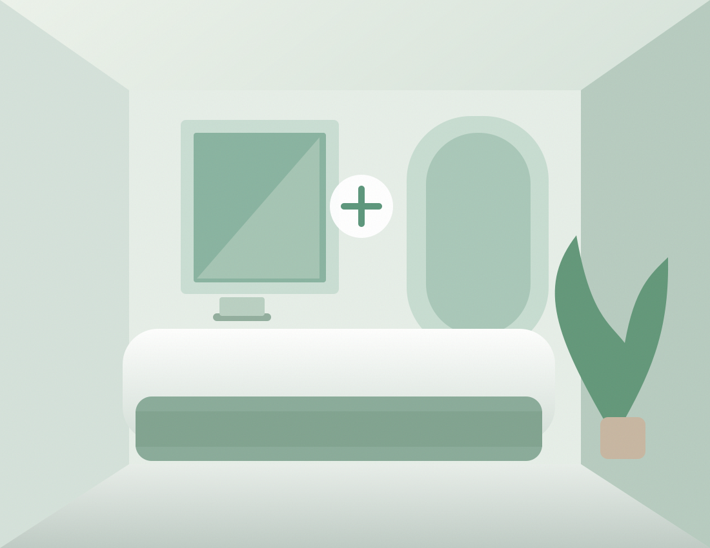
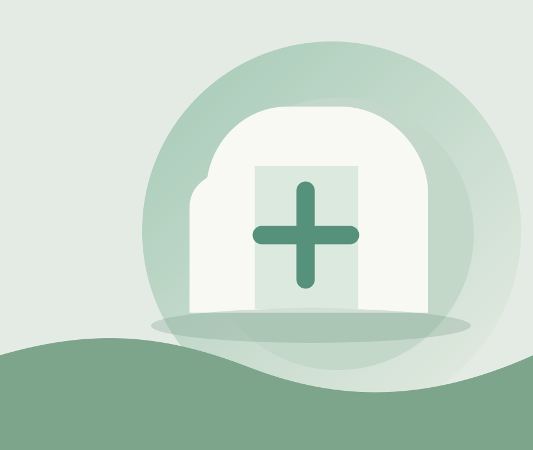

Medicina general
Valoración inicial y orientación para tu bienestar cotidiano.
Atención médica cercana, espacios pensados para tu tranquilidad y una experiencia centrada en las personas.
Conocer cómo agendar
Una estructura visual para organizar especialidades, explicar servicios y simplificar las consultas de futuros pacientes.
Valoración inicial y orientación para tu bienestar cotidiano.
Una mirada proactiva al cuidado de la salud y el seguimiento.
Un espacio para conversar, comprender y resolver tus dudas.

Cada persona tiene una historia distinta. Por eso imaginamos una clínica donde el tiempo, la escucha y la claridad formen parte de cada experiencia.
ESTA DEMO ES FICTICIA Y NO REPRESENTA SERVICIOS MÉDICOS REALES.
En una web real, este espacio conectaría con el sistema de citas, la recepción o el WhatsApp de la clínica.
Observa cómo podría funcionar el inicio de una reserva. No se envían datos reales.
Esta es una demostración interactiva. En un sitio para un cliente se conectaría con su sistema de reservas o canal de contacto.